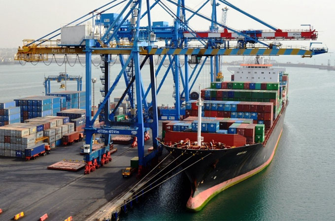
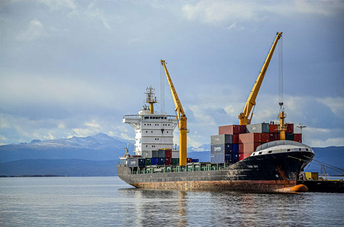

Concesiones portuarias en el modelo landlord
Sin lugar a dudas, el modelo de explotación portuario bajo la figura landlord se presenta —en la actualidad y desde hace largos años— como el modelo de explotación más extendido en los principales puertos de América Latina y Europa meridional.
Y si bien no es tema de este trabajo abordar la indudable crisis de unicidad que presenta el término y su “plena” validez ante los nuevos desafíos portuarios —van de suyo las notables diferencias entre la orientación seguida por los puertos europeos y los americanos—, lo cierto es que, bajo su amparo, el vínculo concesional —entendido como aquel derecho real administrativo portuario por el cual la autoridad portuaria y el sector privado acuerdan el modo de uso, ocupación y explotación de cierta parcela del dominio público portuario bajo su jurisdicción— resulta la figura más exitosa y propicia para alcanzar las cuantiosas inversiones en infraestructura y superestructura portuaria, y su financiamiento.

La especificidad que la modalidad contractual concesional ha alcanzado en la actividad portuaria encuentra su piedra de toque en la indudable estabilidad, seguridad, perdurabilidad y previsibilidad que detenta frente a las restantes modalidades de uso, ocupación y explotación —entiéndase, aquellos títulos subsumidos bajo la figura de permisos de uso— de carácter oneroso, precario y revocable.
La seguridad jurídica resulta un factor determinante en toda empresa portuaria a la hora de tomar decisiones de inversión que exigen motorizar recursos financieros y proyectos de obras que justifiquen —por su volumen— el extendido plazo que caracteriza la modalidad concesional.
Sin embargo, pese a su significativa importancia, no existe —en nuestro régimen jurídico— un marco de referencia que oficie de estándar general y permita ordenar los términos estructurales del contrato. Su diseño, contenido y alcance quedan exclusivamente sujetos a la relación negocial del ámbito local en el que se inscribe.
Cuatro elementos clave del contrato concesional
Sin profundizar en las modalidades que admiten los contratos de concesión —ordinarias (o regulares), BTO, BOT, BOOT o BOO—, todas ellas presentan rasgos constitutivos comunes y característicos de la figura que deberán ser observados por la autoridad portuaria al suscribir el contrato. Pueden resumirse en la siguiente tétrada basal cardinal en materia de obligaciones contractuales: el concesionario asume el riesgo del (i) financiamiento y (ii) inversión en infraestructura y/o superestructura portuaria —incluso, en ocasiones, obligaciones vinculadas al mantenimiento de las condiciones de navegabilidad del espejo de agua lindante al sitio de atraque—, y (iii) gestionar su operación rentablemente durante el plazo concesionado, a su (iv) exclusivo costo y riesgo.

En el marco de este agrupamiento obligacional, el contrato de concesión incluye un amplio conjunto de cláusulas que despliegan los derechos y obligaciones del concesionario en su relación con la administración portuaria que lo otorga. Se destacan:
- (i) Modalidad en el uso del sitio de atraque (exclusivo, semiexclusivo o preferencial).
- (ii) Indicadores de performance (tráfico mínimo, productividad de grúa, productividad de atraque, calidad de servicio, etc.) y sus valores.
- (iii) Inversiones en equipos de manipulación e infraestructura de atraque con los valores referenciales.
- (iv) Facilitación de los indicadores de performance a la administración correspondiente y participación en un potencial Comité Mixto de Seguimiento de la evolución de los indicadores.
Si tomamos el régimen español —siempre de referencia por su incuestionable similitud estructural y caso de éxito—, la Orden FOM/938/2008, que aprueba el pliego de condiciones generales para el otorgamiento de concesiones en el dominio público portuario estatal, contempla 8 títulos que despliegan 37 reglas de aplicación al contrato (disposiciones generales, régimen de obras, régimen económico, condiciones de explotación, transmisión-cesión y gravamen, modificación, extinción y régimen sancionador). Al tratarse de un pliego general, las reglas particulares se incorporan a nivel de cada Autoridad Portuaria para adecuar el contenido al caso concreto.
Por su parte, el World Bank (2007) y la ESPO (2008 y 2011) han aportado un checklist completo de aspectos que deben contemplarse en los contratos de concesión, a modo indicativo.
Sin un marco de referencia general, la experiencia comparada permite asegurar que la tétrada basal cardinal propuesta resulta un punto de partida atento a los estándares más aceptados aplicables en la materia. A partir de ella, será el profesionalismo y la sinceridad negocial de las partes lo que permita arribar al acuerdo más propicio para el puerto en su integralidad.